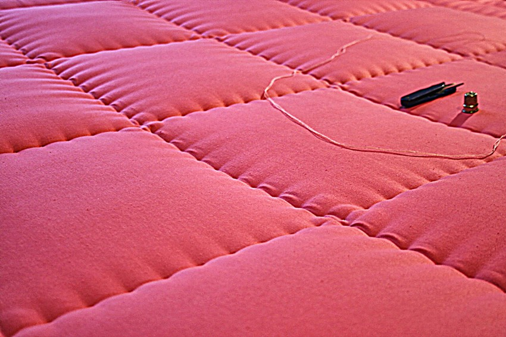
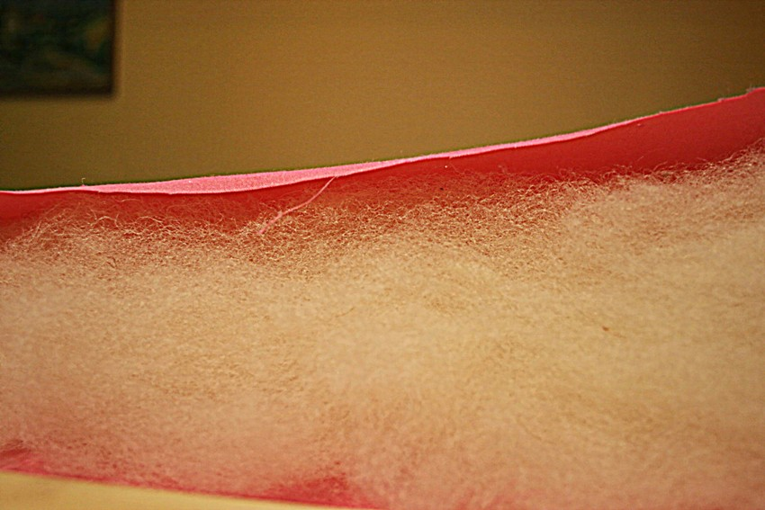
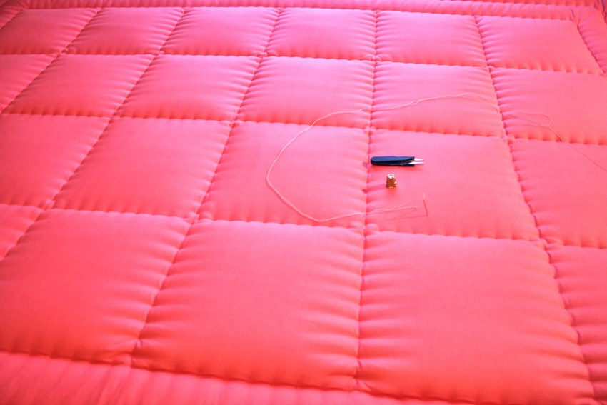

Szycie Kołder

Ręczne szycie kołdry z wełny
Przy produkcji kołder używamy najlepszych, dostępnych na rynku wsypów, niezbędnych do ich wykonania.

Zgręplowana wełna przed uszyciem
Dostarczana przez Pastwa wełna, poddawana jest procesowi gręplowania, dzięki temu możliwym jest jej ponowne wykorzystanie.
Gotowa kołdra bez obszytych krawędzi
Ręczne przeszycia kołdry

Kołdra na gotowo
Najwyższej jakości wsyp
Ręczne szycie kołdry z wełny
Przy produkcji kołder używamy najlepszych, dostępnych na rynku wsypów, niezbędnych do ich wykonania.
Pliki cookie pomagają nam udostępniać nasze usługi. Korzystając z tych usług, zgadzasz się na użycie plików cookie.